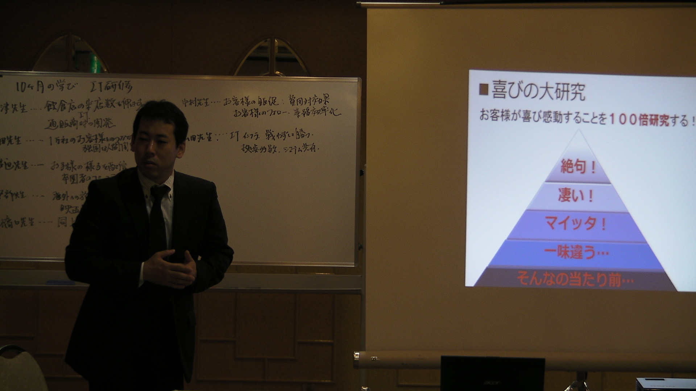
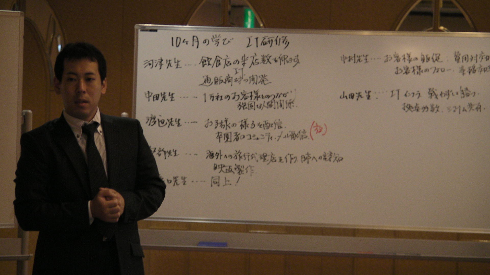
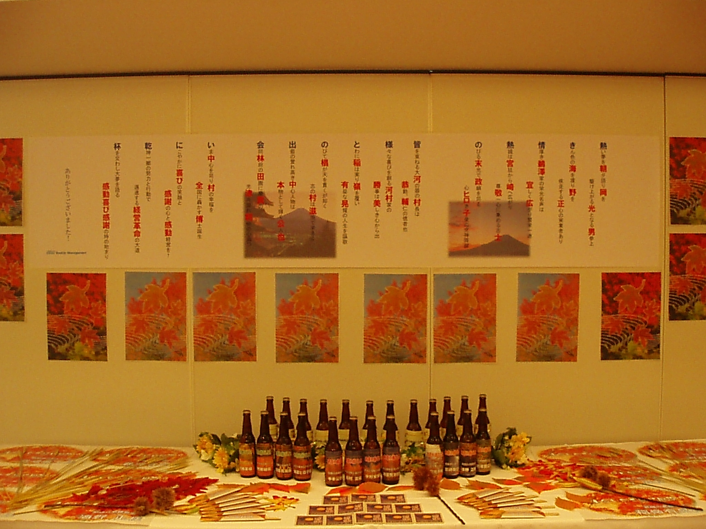

矢部廣重が生涯かけて確立し、矢部大が継承した「感動セールス」。
値引き合戦でも押し売りでもなく、お客様の感情を動かして
「この人から買いたい」を生み出す営業の哲学です。
喜びと感動がなぜ起こるのか。矢部廣重が実践で導き出した、感動セールスの核心。
期待値が現実を上回る。
どんなに頑張っても「やって当然」で終わる。
期待通りを届ける。
満足はするが、感動も紹介も生まれない。
期待を超えた瞬間、感情が動く。
「この人から買いたい」「紹介したい」が生まれる。
感動は「偶然」ではなく、設計できる。
この方程式を理解すれば、営業の打ち手はシンプルになる——「現実をどう期待値より大きくするか」を設計するだけでいい。
「楽をし続けると、感動から遠ざかる」——矢部大の言葉。
価格を下げて売るのが一番「楽」な営業。だから、一番感動が生まれない。
矢部廣重が書籍・セミナー・現場で繰り返し語り続けた、本質的な3つの原則。
価格でも品質でもなく、キーマンが「マイッタ！」「絶句！」と言う一発の必殺技を事前設計する。それは相手だけのために用意された、他の誰もやらない"新しい売り込みのし方"。
「必殺技を持たない営業マンは、価格と品質の土俵で消耗し続ける」
一発では受注しない。キーマンの心理を「驚く→喜ぶ→唸る→絶句→降参→白旗」の6段階で変えていく連続技。感動は偶然ではなく、設計できる受注の方程式だ。
「初級編で狙った顧客の50%、上級では80%が落とせる」
価格と品質の土俵で戦わない。自分だけの感動の土俵をつくり、キーマンとの人間関係を武器にする。負ける商品・高い価格でも受注できる——それが感動セールスの本質。
「方程式マネジメントで、やる前から勝ちが読める」
名前だけ聞いても、営業は変わりません。キーマンの心が驚く→喜ぶ→唸る→絶句→降参→白旗と動いていく6段階を、実際の打ち手まで開示します。
読んだその日から、1段目だけでも試せます。
目的は「いつもの営業と違う」と気づかせること。ここで差がつかなければ、以降は全部聞き流されます。
目的は「この人と話すと自分に得がある」と体感させること。売る前に、与え切ります。
目的は「この人は自分の商売をわかっている」と認めさせること。ここで営業から相談相手に変わります。
目的は、言葉を失わせること。ここが「予想＜現実」の方程式が最も大きく開く瞬間です。
目的は、競合との比較表から降りてもらうこと。価格と品質の土俵を抜ける段です。
目的は、受注だけで終わらせないこと。感動は、紹介という形でしか外に出ません。
この6段階は、順番を入れ替えられません。「驚く」を飛ばして「絶句」をやっても、相手はただ戸惑うだけです。研修では、御社の商材とキーマンに合わせて1段目から順に設計します。
8つの質問に答えるだけです。当てはまるものにチェックを入れてください。所要30秒、送信も登録も不要です。
※ 入力内容はどこにも送信されません。この場で判定が出ます。
トップだけが感動セールスを知っていても、組織は動かない。
矢部大が実践してきた「社員モチベーション×感動の仕組み化」。
社員が本気を出さない最大の原因は「社長が見えない」ことにある。社長が自己開示し、社員の誕生日・挑戦・成果を具体的な言葉で称えると、モチベーションの流れが変わる。「社員を喜ばせるシステム」の設計を支援します。
「やることが多すぎて何もできない」状態を解消する。重点顧客への6連発プログラム、週次ルーチング用紙、社員への業務の明確化——当たり前のことを当たり前にやり切る仕組みが、感動を量産する土台になる。
「よくやった」で終わらせない。社員への称号100、褒める言葉100——言語化された承認が、個人の誇りと組織の一体感をつくる。感動は顧客だけでなく、社員にも設計できる。
「いきなり挫折するよりは小さく始めて大きく育てる」——達成できそうな目標から積み上げる。うまくいったことにもう10%追加する。小さな感動体験が積み重なり、「自分ならできる」という自信に変わる。
「矢部さんは口だけじゃなく、一緒に営業現場に入ってくれた」——建設業の代表からいただいた言葉です。
コンサルタントのほとんどは「資料」と「アドバイス」を届ける。でも感動は、現場でしか生まれない。どんなトークが刺さり、どのタイミングでお客様の目が輝くのか。それは、隣に立って初めてわかることです。
わたくしが学んだのは、父・矢部廣重の背中です。現場で怒鳴られても、断られても、「もう一度会いに行く」を繰り返した。そのしつこさと誠実さが、最終的に「この人から買いたい」を生み出していた。
「成功するために必要なのは、まず自分に課したことを自分でやり切ること」——矢部廣重が書籍で繰り返した言葉。数字は後からついてくる。まず設計して、まず動く。



受けていただいても成果が出ないケースを、先に正直にお伝えします。
当てはまる場合は、お申し込みをお止めすることがあります。
感動セールスは、現場の技術である前に経営判断です。「値引きをやめる」「比較表から降りる」は、営業担当の権限では決められません。社長が中身を知らないまま社員だけが受けると、翌日の商談で「でも安くしないと」と差し戻され、学んだことは三日で消えます。
1段目の「驚く」から6段目の「白旗」まで、商材によっては数か月かかります。来月の売上を今すぐ立てたい場合は、値引きのほうが確実です。わたくしどもがお役に立てるのは、来期以降も値引きせずに売り続けたいとお考えの会社です。
感動セールスは期待値を超える技術です。裏を返せば、期待させて下回った瞬間に、普通の営業より深く失望されるということでもあります。納期が守れない、品質が安定しない、クレーム対応が遅い——心当たりがある場合は、営業より先にそちらを直してください。順番を間違えると、この方法は逆に効きます。
全国から集まった経営者・営業幹部の、リアルな声をお届けします。
「必殺６連発を実践したら、初回訪問で決まった。価格も下げていない。あれは魔法です。」
「矢部さんは口だけじゃなく、一緒に営業現場に入ってくれた。現場でみせてもらって初めて分かった。」
「『戦わずして勝つ』という言葉が、10年来の価格競争の悩みを一瞬で吹き飛ばした。」
「キーマン攻略の型を教わって、商談が"交渉"から"感動体験"に変わった。」
「経営者経験者ならではの『現場感』が、営業チームを根本から変えてくれた。」
「感動セールスを知るまで、ずっと値引きで売っていた。今は値引きゼロで売上が1.6倍になっている。」
「お客様の名前を入れたグッズを一つ用意しただけで、紹介が止まらなくなった。感動設計は本物です。」
「矢部廣重先生の講義を受けたのは30年前。今でもあの言葉が社員教育の柱になっています。」
「『予想＜現実＝感動』を全社員が暗唱できるようになったら、サービス品質が自然に上がった。」
「失敗も成功も知っている人の言葉は重さが違う。本物の名参謀です。」
書籍『戦わずして売り続ける 最強営業の法則』のノウハウを
実践形式で体感・定着させる全4ステップ。
「予想 < 現実 = 感動」の方程式を、自社の商品・サービスに当てはめる。今の営業はどこで期待値を上げすぎているか、どこで現実が足りていないかを洗い出す。
決裁者の感情はどこで動くのか。誰に・何を・どの順序で届けるかの「攻略マップ」を自社用にカスタマイズ。価格ではなく感情で決断させる提案の構成を設計する。
感動セールスを組織に根付かせる。社長の自己開示・称号・承認システム・ルーチング——現場が自律的に動く仕組みを整備し、感動を量産できる体制をつくる。
矢部大が実際の商談・営業現場に同行し、その場でフィードバック。資料では学べない「生きた感動セールス」を体感することで、成約率・単価・紹介率が変わる。
「予想 < 現実」を仕組みにする——研修・講演・現場同行のご相談は、LINEまたはメールで。
まずは無料の30分相談から。